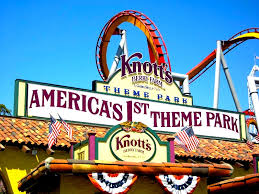
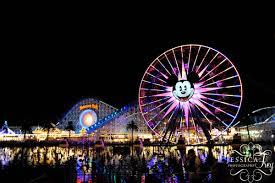
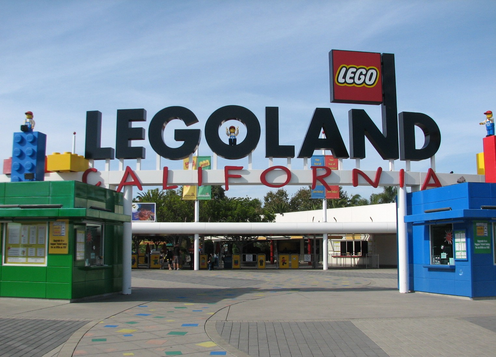

Amusement Parks
Knotts Berry Farm
Knott's Berry Farm is a 160-acre theme park in Buena Park, California, Americas first theme park will thrill seeking rides, and history that you can ride. Looming 118 feet over historic Ghost Town, GhostRider is one of the longest and tallest wooden roller coasters in the world.
DisneyLand & California Adventures
Enter a magical kingdom where you can sail with pirates, explore exotic jungles, meet fairy-tale princesses, dive under the ocean and rocket through the stars—all in the same day! Disneyland Park is a beloved Southern California destination where generations of families have made their Disney dreams come true. Opened in 1955, Walt Disney’s original theme park is divided into 8 extravagantly themed lands—Main Street, U.S.A., Tomorrowland, Fantasyland, Mickey's Toontown, Frontierland, Critter Country, New Orleans Square and Adventureland.
Lego Land
Legoland California is a theme park and miniature park located in Carlsbad, California, based around the Lego toy brand. On March 20, 1999, it became the third Legoland park to open, and the first Legoland outside of Europe. The park is owned by Merlin Entertainments, the largest theme park firm in Europe, and second largest in the world after Walt Disney Parks and Resorts
